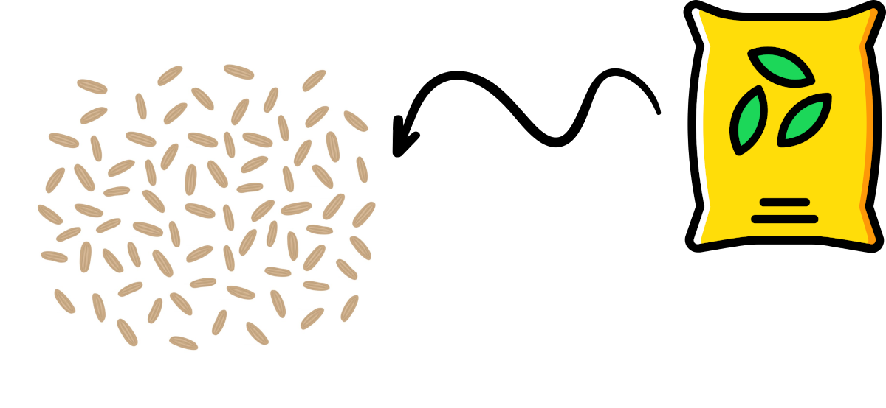
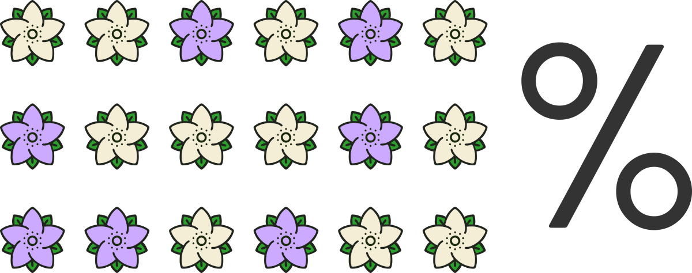
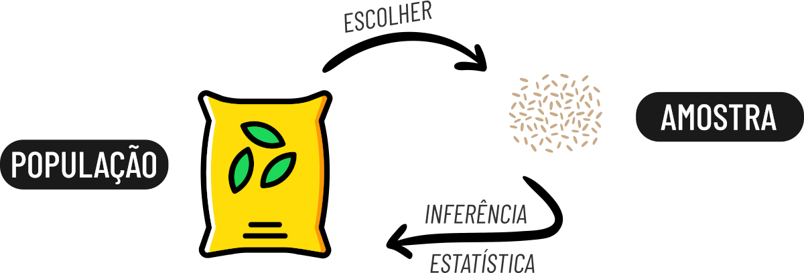

| GG | REP | PCC | CPT | APT | LPT | LCX | LSC |
|---|---|---|---|---|---|---|---|
| NM | 1 | 1850 | 189.14 | 51.41 | 110.30 | 66.41 | 105.36 |
| NM | 2 | 1645 | 174.84 | 57.85 | 108.57 | 62.09 | 106.89 |
| NM | 3 | 1935 | 175.24 | 42.36 | 123.44 | 55.90 | 118.92 |
| NM | 4 | 2015 | 173.25 | 55.05 | 121.24 | 58.41 | 114.60 |
| NF | 1 | 1145 | 138.89 | 48.57 | 92.46 | 46.06 | 85.57 |
| NF | 2 | 1100 | 150.94 | 45.81 | 97.60 | 66.32 | 75.83 |
| NF | 3 | 1270 | 144.80 | 39.79 | 108.17 | 45.39 | 99.73 |
| NF | 4 | 1170 | 155.00 | 44.81 | 92.15 | 57.04 | 82.29 |
Revisão Inferência Estatística
Paulo Barros ![]()
Genômica Aplicada à Conservação e Melhoramento (GACOM)
PPG em Zootecnia (Genética e Melhoramento)
Universidade Estadual do Sudoeste da Bahia
Paulo Carneiro
Genômica Aplicada à Conservação e Melhoramento (GACOM)
PPG em Zootecnia (Genética e Melhoramento)
Universidade Estadual do Sudoeste da Bahia
Aula 01
Tipos de Inferência, Inferência Estatística e Experimentação
Tipos de Inferência
Inferência Dedutiva
É o método de derivar informação de fatos ou declarações aceitas como verdadeiras (Premissas)
Exemplo:
Um dos ângulos interiores de um triângulo retângulo tem 90˚.
\(\textbf A\) é um triângulo retângulo.
Se aceitarmos as premissas como verdadeiras, somos forçados a concluir:
- Um dos ângulos interiores de \(\textbf A\) tem 90˚.
Tipos de Inferência
Inferência Indutiva
Processo de raciocínio indutivo, em que se procuram tirar conclusões indo do particular para o geral.
É um processo trabalhoso.
Não é possível fazer generalizações exatas.
Existe um elemento obrigatório de incerteza.
Entretanto, o grau de incerteza das generalizações pode ser medido se a experimentação acontecer obedecendo certos princípios.
A incerteza é medida em termos de probabilidade.
Um dos objetivos da Estatística é fornecer métodos de realizar inferências estatísticas e mensurar as incertezas.
Inferência Estatística
Exemplo:
10 milhões de sementes
Quantas sementes produzirão flores brancas?


Inferência Estatística

POPULAÇÃO: totalidade dos elementos sob discussão, dos quais desejamos informação.
AMOSTRA: qualquer parte (ou subconjunto) de uma população.
Inferência estatística é o processo de especificar valores para parâmetros desconhecidos da população, através de estatísticas obtidas de um conjunto de valores observados numa amostra.
Estatística, Parâmetro, Estimador e Estimativa
PARÂMETRO: é uma medida numérica que descreve uma característica ou propriedade de uma população.
\[f(x|\mu, \sigma^2) = \frac{1}{\sigma \sqrt{2\pi}} e^{-\frac{(x-\mu)^2}{2\sigma^2}}, \ \ F.D.P \ da \ Distribuição \ Normal\] \(\large \mu\) média populacional, e \(\large \sigma^2\) variância populacional
ESTATÍSTICA: é qualquer função da amostra que não depende de parâmetros desconhecidos.
\[\bar{x} = \frac{1}{n} \sum_{i=1}^{n} x_i\]
\[Média \ Amostral\]
\[s^2 = \frac{1}{n-1} \sum_{i=1}^{n} (x_i - \bar{x})^2\] \[Variância \ Amostral\]
Estatística, Parâmetro, Estimador e Estimativa
ESTIMADOR: É uma regra ou fórmula matemática usada para calcular uma estimativa de um parâmetro desconhecido de uma população com base em dados amostrais. Por exemplo, a média amostral \(\large \bar{x}\) é um estimador da média populacional \(\large \mu\).
ESTIMATIVA: É o valor numérico específico calculado usando um estimador com dados amostrais reais. Por exemplo, se usarmos a média amostral \(\large \bar{x}\) para calcular a média de uma amostra de alturas, o valor numérico resultante é a estimativa da média populacional.
\[\bar{x} = \frac{1}{n} \sum_{i=1}^{n} x_i\] \[Estimador\]
\[\bar{x} = \frac{1}{n} \sum_{i=1}^{n} x_i = \frac{12+13+7+8+10}{5} \implies \bar{x} = 10\] \[Estimativa\]
Teste de Hipóteses
Uma hipótese estatística é uma afirmação ou suposição sobre os parâmetros de uma ou mais populações. Essas hipóteses são formuladas para serem testadas estatisticamente usando dados amostrais. É uma suposição quanto ao valor de um parâmetro populacional, que será verificada por um teste paramétrico, ou uma afirmação quanto à natureza da população, que será verificada por um teste de aderência, entre outros.
Hipótese Nula \((H_0)\): É uma afirmação que assume que não há efeito, não há diferença ou não há associação entre variáveis na população. Geralmente, é a hipótese que o pesquisador está interessado em testar. Por exemplo, “a média de um grupo é igual a um valor específico” ou “não há diferença entre dois grupos”.
Hipótese Alternativa \((H_1)\): É uma afirmação que contradiz a hipótese nula. Ela sugere que há um efeito, uma diferença ou uma associação na população. Por exemplo, “a média de um grupo é diferente de um valor específico” ou “há uma diferença entre dois grupos”.
Experimentação
Estudo dos experimentos (planejamento, execução, análise dos dados obtidos e interpretação dos resultados).
Estudo experimental: influenciamos nas respostas das unidades experimentais.
Estudo observacional: não influenciamos nas respostas das unidades experimentais.
Experimento ou ensaio: é um trabalho previamente planejado, que segue determinados princípios básicos e no qual se faz a comparação dos efeitos dos tratamentos.
Experimentação
Tratamento: é o método, elemento ou material cujo efeito desejamos medir ou comparar em um experimento. (genótipos, variedades, níveis de proteína na ração, diferentes extratos vegetais, diferentes locais de coleta e outros)
Unidade experimental ou parcela: é a unidade que vai receber o tratamento e fornecer os dados que deverão refletir o seu efeito. (Rações: 1 leitão ou um grupo de leitões; Local: 1 peixe; Variedades: um vaso com plantas, etc)
Delineamento experimental: é o plano utilizado na experimentação e implica na forma como os tratamentos serão designados às unidades experimentais.
- Delineamento inteiramente casualizado (DIC);
- Delineamento em blocos casualizados (DBC);
- Entre outros …
Experimentação - Princípio da Repetição
Consiste na reprodução do experimento básico;
Visa propiciar a obtenção de uma estimativa do erro experimental (verificar a variação dentro);
A repetição consiste em aplicar o mesmo tratamento a várias parcelas ou unidades experimentais num mesmo experimento.
Experimentação - Princípio da Casualização
Propiciar, a todos os tratamentos, a mesma chance de serem designados a qualquer uma das unidades experimentais;
Evita que nenhum dos tratamentos seja sistematicamente favorecido ou desfavorecido por fatores externos;
Necessário para que as variações que contribuem para o erro experimental, sejam convertidas em variáveis aleatórias.
Permite obter uma estimativa válida do erro experimental;
Garante o uso de testes de significância por tornar os erros experimentais independentes;
sem os princípios básicos da repetição e da casualização não existe experimentação.
Experimentação - Princípio do Controle Local
Muito usado, mas não é obrigatório;
Dividir um ambiente heterogêneo em sub-ambientes homogêneos e tornar o delineamento experimental mais eficiente, pela redução do erro experimental.
Fontes de Variação em um Experimento
Premeditada: É aquela introduzida pelo pesquisador com a finalidade de fazer comparações. Por exemplo: tratamentos.
Sistemática:
Variações não intencionais, mas de natureza conhecida;
Variação inerente ao material experimental;
Podem ser controladas pelo pesquisador (heterogeneidade do solo, idade dos animais, época de coleta etc.)
Aleatória:
São variações de origem desconhecida, não podendo ser controladas;
Constituem o erro experimental (variações no material experimental e falta de uniformidade nas condições experimentais);
Nem sempre é possível distinguir claramente este tipo de variação da anterior.
Aula 02
Teste de Hipótese, ANOVA e Correlação
Teste de Hipótese
Fornecem ferramentas que nos permitem rejeitar ou não rejeitar uma hipótese estatística através da evidencia fornecida pela amostra.
Hipótese Nula \((H_0)\): É uma afirmação que assume que não há efeito, não há diferença ou não há associação entre variáveis na população. Geralmente, é a hipótese que o pesquisador está interessado em testar. Por exemplo, “a média de um grupo é igual a um valor específico” ou “não há diferença entre dois grupos”.
Hipótese Alternativa \((H_1)\): É uma afirmação que contradiz a hipótese nula. Ela sugere que há um efeito, uma diferença ou uma associação na população. Por exemplo, “a média de um grupo é diferente de um valor específico” ou “há uma diferença entre dois grupos”.
Região Crítica
É a faixa de valores da estatística dos testes que nos levam à rejeição da hipótese \(H_0\);
Se o valor da estatística do teste (\(z\), \(t\), \(F\) etc) pertença à região crítica, rejeita-se \(H_0\);
Qualquer decisão tomada implica na possibilidade de cometer, basicamente, dois tipos de erros: erro tipo I e erro tipo II.
Erro Tipo I e Erro Tipo II
| Realidade | ||
|---|---|---|
| Decisão | \(H_0\) é verdadeira | \(H_0\) é falsa |
Rejeitar \(H_0\) |
\(\large \alpha\) |
\(\large 1 - \beta\) |
Aceitar \(H_0\) |
\(\large 1- \alpha\) |
\(\beta\) |
Erro Tipo I (Falso Positivo):
Definição: Um erro tipo I ocorre quando você rejeita uma hipótese nula verdadeira (\(\large \alpha\)).
Analogia: É como quando o detetive prende uma pessoa inocente, pensando que ela é culpada.
Erro Tipo II (Falso Negativo):
Definição: Um erro tipo II ocorre quando você falha em rejeitar uma hipótese nula falsa (\(\large \beta\)).
Analogia: É como quando o detetive deixa escapar um criminoso culpado, pensando que ele é inocente.
P-valor (p-value)
\(\large \alpha \ = \ P\) (cometer o erro tipo I)
p-value: corresponde ao menor nível de significância para a qual \(H_0\) poderia ter sido rejeitada (nível mínimo de significância para rejeição de \(H_0\)). Probabilidade de rejeitar \(H_0\) devido a variáções aleatórias.
De maneira simples:
Se p-value \(\large \leq \alpha\) (rejeita-se \(H_0\));
Se p-value \(\large \gt \alpha\) (aceita-se \(H_0\)).
Não é a probabilidade da hipótese nula ser verdadeira!
Não é a probabilidade de rejeitar dado a hipótese nula!
é a probabilidade de se observar uma estatística tão ou mais extrema do que a observada, no melhor cenário sob a hipótese nula.
ANOVA - Análise de Variância
Técnica que estuda grupos de médias de tratamentos e verifica se existem diferenças significativas entre elas.
A ideia da ANOVA é particionar a variância na resposta entre a associada aos preditores e ao erro.
Os preditores (variáveis independentes) são comumente chamados de fatores com diferentes níveis, e os parâmetros da regressão chamados de efeitos.
| Fontes de Variação (FV) | Graus de Liberdade (GL) | Soma de Quadrados (SQ) | Quadrado Médio (QM) | F |
|---|---|---|---|---|
Variedades |
3 |
1636 |
545.3 |
5.40** |
Erro Experimental |
20 |
2018 |
100.9 |
|
Total |
23 |
3654 |
ANOVA - Análise de Variância
\(F_{calc} = 5.40 \gt F_{tab}(\alpha = 0.01,3,20) = 4.94\)
A diferença entre médias de tratamentos é significativa (p < 0.01).
Rejeita-se \(H_0: \mu_1 = \mu_2 = \mu_3 = \mu_4\)
Modelo Estatísto
Um modelo estatístico é uma representação matemática ou probabilística de um fenômeno, processo ou sistema que está sujeito a variações aleatórias. Ele é desenvolvido com base em dados observados ou experimentais e é utilizado para descrever, entender, prever ou controlar o comportamento do fenômeno em questão. Visa identificar que fatores estão influenciando a variável em estudo (resposta).
\[\Large y_{ij} = \mu + t_{i} + \epsilon_{ij}\]
\(y_{ij}\) : valor observado para a VD no i-ésimo tratamento na j-ésima repetição.
\(\mu\) : média geral do experimento (intercepto) para a VD.
\(t_{i}\) : efeito do particular tratamento \(i\) no valor observado \(y_{ij}\).
\(\epsilon_{ij}\) : erro aleatório associado a observação \(y_{ij}\).
Rodando ANOVA no
Utilizamos a função aov que recebe como argumento a declaração do nosso modelo estatístico e o conjunto de dados.
Df Sum Sq Mean Sq F value Pr(>F)
GG 3 6623212 2207737 90.42 1.66e-08 ***
Residuals 12 293012 24418
---
Signif. codes: 0 '***' 0.001 '**' 0.01 '*' 0.05 '.' 0.1 ' ' 1Modelo Estatístico
\[\textbf{PCC} \sim \mu \ + \ \textbf{GG} \ + \ \varepsilon\]
Na declaração do modelo na função aov declaramos somente a nossa variável resposta e os fatores (preditores) a serem testados.
A média geral \(\mu\) e o erro aleatório \(\varepsilon\) são inseridos internamente pela função.
Rodando ANOVA no
Df Sum Sq Mean Sq F value Pr(>F)
GG 3 256.3 85.45 1.657 0.229
Residuals 12 618.7 51.56 \(\small \textbf{LCX} \sim \mu \ + \ \textbf{GG} \ + \ \varepsilon\)
ANOVA no … como os fenícios
| Fontes de Variação (FV) | Graus de Liberdade (GL) | Soma de Quadrados (SQ) | Quadrado Médio (QM) | F |
|---|---|---|---|---|
Variedades |
\(p-1\) |
\(SQ_{Trat}\) |
\(\frac{SQ_{Trat}}{p-1}\) |
\(F\) |
Erro Experimental |
\(n-p\) |
\(SQ_{Res}\) |
\(\frac{SQ_{Res}}{n-p}\) |
|
Total |
\(n-1\) |
\(SQ_{Total}\) |
\(\small \displaystyle SQ_{Total} = \sum_{i=1,j=1}^{I,J}Y_{ij}^2 - \frac{\displaystyle \left( \sum_{i=1,j=1}^{I,J}Y_{ij}\right)^2}{IJ}\)
\(\small \displaystyle SQ_{Trat} = \sum_{i=1}^{I}\frac{T_{i}^2}{J} - \frac{\displaystyle \left( \sum_{i=1,j=1}^{I,J}Y_{ij}\right)^2}{IJ}\)
\(\small SQ_{Total} \ = \ SQ_{Trat} + SQ_{Res}\)